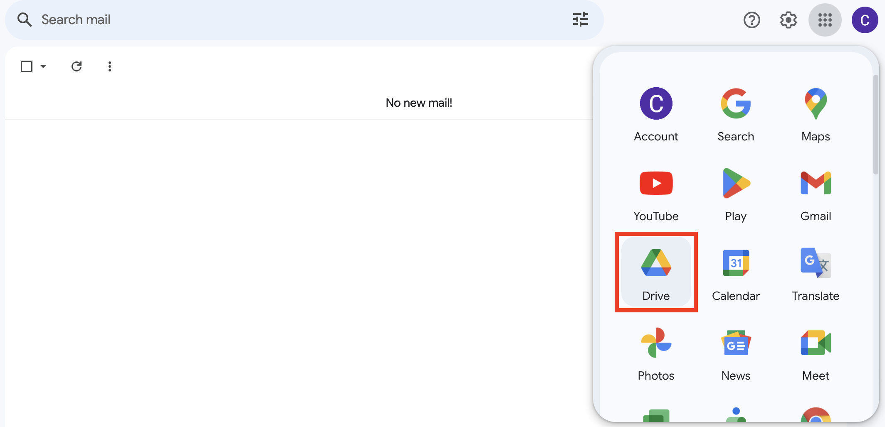
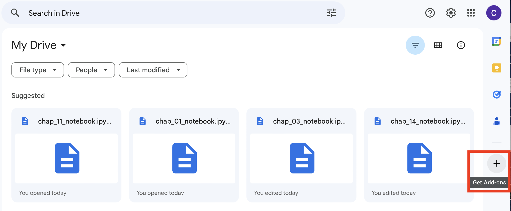
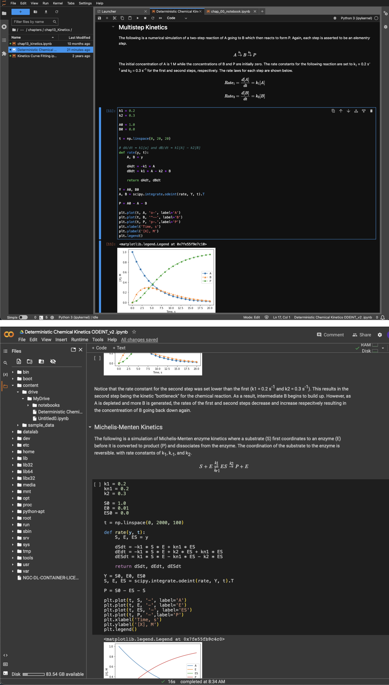
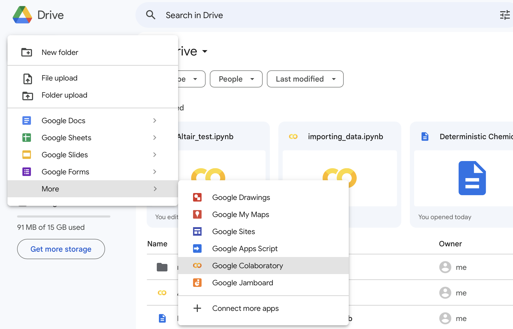
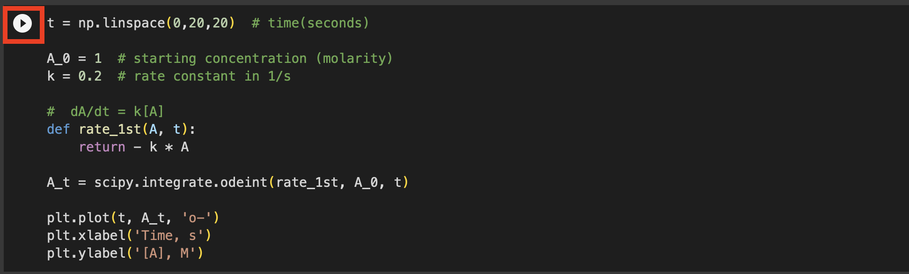

Chapter 0: Python & Jupyter Notebooks#
0.1 Python#
Python is a popular programming language available on all major computer platforms including macOS, Linux, and Windows. It is a scripting language which means that the moment the user presses the Return key or Run, the Python software interprets and runs the code. This is in contrast to a compiled language like C where the code must first be translated into binary (i.e., machine language) before it can be run. On-the-fly interpretation makes Python quick to use and often provides the user with rapid results. This is ideal for scientific data analysis where the user is routinely making changes to the processing and visualization of the data.
Python is free, open source software and is maintained by the non-profit Python Software Foundation. This is appealing for two major reasons. The first is that it is widely, freely, and irrevocably available to anyone who wants to use it regardless of budget. With proprietary software, which is more and more commonly offered under a subscription model, if a company stops offering or updating a software package, it may simply become unavailable leaving users without the software they built their work around. Second, it is open source, so anyone can inspect and modify the code. This allows anyone to review the code to ensure it does what it claims instead of relying on the assertions of the software distributer.
Another reason to use Python over other options, free or otherwise, is the power and the community support available to Python users. Python is a common and popular programming language that has been applied to a wide variety of applications including data analysis, visualization, machine learning, robotics, web scraping, 3D graphics, and more. As a result, there is a large community built around Python that provides valuable support for those who need assistance. If you are stuck on a problem or have a question, a quick internet search will likely provide the answer. Common internet forums include stackexchange.com or stackoverflow.com among others. If you have a question or need help on something, you are probably not the first person to ask that question.
Along with Python, this book uses the IPython environment and Jupyter notebooks as a medium for running and sharing Python code. More details are give below on Jupyter notebooks, but for now, know that they provide interactive environments ideal for scientific computing. In addition, we will use a variety of free, open source libraries to provide collections of useful functions for scientific data processing, analysis, and visualization. Think of a library as an add-on or tool pack for Python, and there are many to choose from.
0.2 Software#
The first step is to get acces to the software which includes Python, Jupyter notebooks, and all the libraries/packages used in this book; and there are multiple options for accomplishing this. We will cover two common options below - this includes either installing the software on your own computer using Anaconda or using Google Colab to run the software from a Google server. Both are relatively simple to set up and have different advantages. Some of the major advantages of each are listed below.
Install Software |
Google Colab |
|---|---|
It’s free |
It’s free |
Faster execution of code |
No sofware installation required |
Not dependant on a internet connection |
Uses Google’s computing resources to run calculations, not yours |
No accounts or registration required |
Easier for multiple people to collaborate on the same notebook |
Can have >5 notebooks open at any given time |
You only need to use one of the above options, but you can always switch later on if you want because both use the same notebook files to store your work. Go ahead and follow the instrucutions for one of the following.
0.2.1 Install Software on Computer#
There are many ways to install the software on your computer. The faster and more convenient approach is to use an installer that brings nearly all the software with it. The Anaconda installer (link below) provided for free by Continuum Analytics is a very popular option that does exactly this. There are other installation options available, but the instructions in this book for launching applications assumes Anaconda. When installing the software, be sure to choose Python 3 as this is the current version. While some applications still support Python 2, it is technically legacy with support being gradually removed. As of the time of this writing, multiple major projects in the scientific Python ecosystem no longer support Python 2, so it is likely in your interest to be on Python 3. You are strongly encouraged to install the most recent version of Python.
The Anaconda installer above brings almost everything you need. Any software used in this book that is not installed by default through the above method is addressed in its respective chapter. If you want to install additional libraries, open the Anaconda-Navigator (green circle icon) and select the Environment tab on the left. Select Not Installed from the pull-down menu to see all the libraries available to be installed as shown in Figure 1. To install a library, check the box next to it and click the Apply button that appears on the bottom right. Anaconda will install it and anything else that is required for the new library to work properly. To update a library, select Upgradable from the pull-down menu, select the package(s) you want to update, and click Apply.
 Figure 1 Installing additional libraries using Anaconda-Navigator.
Figure 1 Installing additional libraries using Anaconda-Navigator.
Alternatively, you can install many of the libraries using the Terminal. To launch the Terminal, either use your computer’s build-in terminal or launch JupyterLab (see section 0.3.1), select the Launcher tab in JupyterLab, and click Terminal (Figure 2).
 Figure 2 Launching the terminal using the JupyterLab launcher.
Figure 2 Launching the terminal using the JupyterLab launcher.
From here, you can install various libraries using either of the below commands where <library> is the name of the library to install.
pip install <library>
or
conda install <library>
Most libraries can be installed using either of the above commands, but a few can only be installed with one. You should do a quick internet search to see which is the prefered method for a particular library before installing it. The pip list or conda list command will display a list of all libraries currently installed with version numbers. To perform an update, the following two commands may be used for many libraries. Again, check to see which is preferred for a particular library.
pip install <library> --upgrade
conda update <library>
0.2.2 Google Colab#
The other option we’ll cover is to run the software on a Google server using Google Colab. You don’t need to install any software for this option, but you will need a free Google account. If you have a gmail account or your institution’s email is run by Google, you already have a Google account. While you could just go directly to the Colab Page, we want to be able to work with data files on your Google Drive, so below are instructions for setting up Google Colab from your Google Drive.
First, log into your Google account or create an account if you don’t have one already. Next, navigate to Google Drive by clicking on the Google Apps icon (3 \(\times\) 3 grid of dots) on the top right and click Drive (Figure 3)
 Figure 3 Accessing Google Drive
Click the Get Add-ons button on the center right of the window (+ icon) (Figure 4) and search for “Google Colab” and click Install.
 Figure 4 Accessing add-ons
Most of the libraries (see section 0.6) used in this book are already available in Google Colab by default including NumPy, SciPy, pandas, seaborn, scikit-image, and scikit-learn. If you need any additional libraries (or “packages”), you can usually install them by adding a code cell at the top of your Jupyter notebooks that looks like the following inserting the library name for <library>. If you need any additional libraries installed for this book, this will be addressed in the appropropriate chapter.
!pip install <library>
0.3 Using Jupyter Notebooks#
The Jupyter notebook (formerly known as the IPython notebook) is an electronic document designed to support interactive data processing, analysis, and visualization in a shareable format. A Jupyter notebook can contain live code, equations, explanatory text, and the output of code such as values, text, images, and plots. The code and examples in this book are intended to be run from a Jupyter notebook but should work fine in many other environments including a basic IPython terminal. You can work with Jupyter notebooks either by having the Jupyter software installed on your computer or by running them on Google Colab which is Google’s implementation of Jupyter.
The Jupyter notebook is structured as a series of cells of two main types: code and markdown. The code cells contain live Python code that can be run inside the notebook with any output of the code, including values, text, and plots, appearing directly below the cell (Figure 5). The markdown cell is the other common cell type and is designed to contain explanatory information on what is happening in the code cells. They can contain text, equations, and images to help the user convey information. Markdown cells support formatting in markdown, html, and Latex. These two types of cells provide the user with the ability to produce documents containing the data analysis, results, and explanations of the data and analysis along with any conclusions.
 Figure 5 An example Jupyter notebook with markdown cells, code, and outputs of the code when open on Jupyter installed on a computer (top) and from Google Colab (bottom).
Jupyter notebooks can be opened and edited using Jupyter installed on your own computer or Google Colab. While the two platforms of Jupyter are similar, there are some minor differences in the location of some controls and other features. Using installed Jupyter and Google Colab are both addressed below.
0.3.1 Jupyter Installed using Anaconda#
If you have Python and Jupyter installed on your computer using Anaconda (section 0.2.1), a Jupyter notebook can be launched by starting the Navigator application (green circle icon) and then clicking the Launch button under JupyterLab. Alternatively, Jupyter can be launched from the Terminal or shell by typing jupyter-lab. The Jupyter notebook will launch in the web browser, but this is not a website. An internet browser is fundamentally a fancy file viewer that displays documents and images from web servers, but it can also view files on your own computer which is what Jupyter is doing. From here, you can either select an already existing Jupyter notebook, denoted by the orange icons and .ipynb extension (Figure 6, left), to open it or create a new notebook by selecting New from the File menu (Figure 6, right) and selecting Notebook. If a popup dialogue appears titled Select Kernel, you should select Python 3.
 Figure 6 Launching a Jupyter notebook can be accomplished by opening a preexisting notebook from within JupyterLab (left) or launching a new Jupyter notebook from the File menu (right).
Figure 6 Launching a Jupyter notebook can be accomplished by opening a preexisting notebook from within JupyterLab (left) or launching a new Jupyter notebook from the File menu (right).
Both code and markdown cells can be run by either selecting Run Selected Cells in the Run menu, by clicking the ► button at the top of the notebook (Figure 7), or by using the Shift + Return shortcut. When a code cell is run, the code is executed with any output appearing directly below. When a markdown cell is executed, the text in the cell is rendered to look nicer, and any html or Latex code is rendered to generate the equation(s) or desired formatting. Markdown cells do not execute Python code and treat code like regular text.
 Figure 7 Run a selected cell in a Jupyter notebook by clicking the ► button at the top of the notebook or by selecting Run Selected Cells from the Run menu. The output of a code cell appears directly below the executed code cell.
Figure 7 Run a selected cell in a Jupyter notebook by clicking the ► button at the top of the notebook or by selecting Run Selected Cells from the Run menu. The output of a code cell appears directly below the executed code cell.
To add additional cells in Jupyter, click the + above the notebook to produce another cell and then select either Code or Markdown from the pulldown menu at the top to set the cell type.
0.3.2 Jupyter using Google Colab#
Google Colab is Google’s flavor of Jupyter with Python. If you are using Google Colab (section 0.2.2), you can open a notebook by double clicking on the Jupyter notebook file (.ipynb extension) in your Google Drive. To create a new notebook, click the New button on the top left of the Google Drive window and then More \(\rightarrow\) Google Colaboratory. (Figure 8).
 Figure 8 Launching a new notebook in Google Colab using New \(\rightarrow\) More \(\rightarrow\) Google Colaboratory.
Once your notebook is open, you can execute code or markdown cells by either selecting one of the run options (e.g., Run all) in the Runtime menu, by clicking the ► button at the left of the cell (Figure 9), or by using the Shift + Return shortcut.
 Figure 9 A cell can be executed by clicking the ► button at the left of a cell in Google Colab among other methods.
Just like Jupyter installed on a computer, once a code cell is run, the code is executed with any output (e.g., numbers, text, or graphs) appearing directly below the code cell. When a markdown cell is executed, the text in the cell is rendered to look nicer, and any html or Latex code is rendered to generate the equation(s) or desired formatting. If code is written in a markdown cell, it is treated like regular text instead of code.
To add additional cells in Google Colab, click either the + Code or + Text above the notebook to produce another code or markdown cell, respectively.
The one other major difference between running the software installed on your own computer and Google Colab is that if you want Colab to be able to interact with data or images files on your Google Drive, you need to include the three extra lines of code shown below at the top of your notebook. The first two lines grant the notebook access to read/write files on your Google Drive while the third line (%cd /content/drive/My Drive/project) points your notebook to where your files are located. The path should reflect the location of the folder containing your notebook and data files. For example, if your notebook is contained in a folder titled project on Google Drive, the path will be /content/drive/My Drive/project.
from google.colab import drive
drive.mount('/content/drive')
%cd /content/drive/My Drive/project
0.4 Markdown#
Markdown is a light-weight markup language that allows users to make bold, italic, or monospaced text and various kinds of lists and other simple formatting. The table below provides a collection of common markdown syntax (left) with the corresponding rendered result (right). These are worth knowing to generate sharp markdown cells in your Jupyter notebooks. You will likely find that regular usage will commit them to memory.
Table 1 Markdown Syntax
Markdown Syntax |
Result |
|---|---|
# Header |
Header |
## Sub-Header |
Sub-header |
## Sub-Sub-Header |
Sub-Sub-Header |
* Italic * |
Italic |
** Bold ** |
Bold |
`Monospace` |
Monospace |
— |
Line across page |
> |
Indents the block of text |
* Item |
Bulleted item in line |
1. Item |
Numbered list item |
[link](www.python.org) |
URL link |
One difference between writing code in a code cell versus a markdown cell is that code cells color the text based on the syntax or the role the text plays in the code, known as syntax highlighting, and markdown cells do not. It would be like if a word processor colored nouns gray, verbs orange, prepositions blue, and punctuation marks red so that reader can see the role each word or symbol plays in a sentence. If you want to include example text in a markdown cell with syntax highlighting, place ~~~python in the line above the code and ~~~ in the line below the code.
0.6 Overview of Python Scientific Libraries#
The Python programming language allows for add-ons known as libraries or packages to provide extra features. Each library is a collection of modules, and each module is a collection of functions… or occasionally data. For example, the SciPy library contains a module called integrate which contains a collection of functions for integrating equations or sampled data. For scientific applications, there is a series of core libraries collectively known as the SciPy stack along with many other popular libraries. The table below lists some of the common libraries for scientific applications with an asterisk by those often considered part of the SciPy stack.
Table 2 Common Python Scientific Libraries
Library |
Description |
|---|---|
NumPy* |
Foundation of the SciPy stack and provides arrays and a large collection of mathematical functions |
SciPy* |
Scientific data analysis tools for common scientific data analysis tasks including signal analysis, Fourier transform, integration, linear algebra, optimization, feature identification, and others |
Matplotlib* |
Popular and powerful plotting library |
Scikit-Image* |
Scientific image processing and analysis |
Seaborn |
Advanced plotting library built on matplotlib |
SymPy* |
Symbolic mathematics (somewhat analogous to Mathematica) |
Pandas* |
Advanced data analysis tools |
Scikit-Learn |
Machine learning tools |
TensorFlow |
Machine learning tools for neural networks |
NMRglue |
Nuclear magnetic resonance data processing |
Biopython |
Computational biology and bioinformatics |
Scikit-Bio |
Computational biology and bioinformatics |
RDKit |
General purpose cheminformatics |
Further Reading#
For further reading and exploration on Jupyter notebooks, the Jupyter Project website below is a good place to see what is happening. There are also a number of books that include chapters on the Jupyter notebooks and the interactive IPython environment.
Jupyter Project Website. https://jupyter.org (free resource)
Google Colab (and Jupyter) Cheat Sheet. https://colab.research.google.com (free resource)
SciPy Website. https://www.scipy.org (free resource)
IPython Interactive Computing Website. https://ipython.org (free resource)
VanderPlas, J. Python data Science Handbook: Essential Tools for Working with Data, 1st ed.; O’Reilly: Sebastopol, CA, 2017, chapter 1. Freely available from the author at https://jakevdp.github.io/PythonDataScienceHandbook/ (free resource)
0.5 Comments#
Along with markdown cells, it is good practice to add comments to your code. Comments are a means of describing what each section of code does and makes it easier for you and others to navigate the code. It may seem clear to you what each piece of code does as you write it, but after a week, month, or longer, it is unlikely to be as obvious. Someone (attribution uncertain) once elegantly described the importance of comments in stating that the “Your closest collaborator is you six months ago, but you don’t reply to emails.” Comment your code now so that you are not confused later.
The code comments are added directly to code cells using the hash
#symbol. Anything in a line after a hash symbol is not executed. This means that an entire line can be a comment or a comment can be added after code as demonstrated below with comments colored differently than the rest of the code.